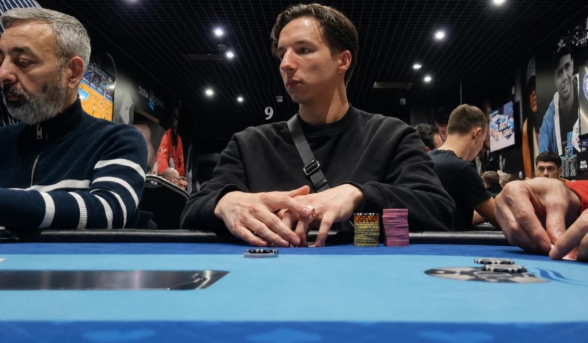

L'accompagnement n°1 pour les joueurs de poker
La Salle du Temps est l'accompagnement pensé pour les joueurs de poker qui veulent devenir rentables et générer un revenu régulier aux tables, sans dépendre de la chance.
Une structure qui t'accompagne pour être rentable
Ici, tu n'es pas seul face à des vidéos. La Salle du Temps repose sur trois piliers :
- Une méthode claire : L'Équation 3D, un cadre de décision que tu appliques du préflop à la river.
- Des joueurs professionnels à tes côtés : tu progresses au contact de joueurs qui vivent du poker, et ton jeu est corrigé en direct.
- Un laboratoire pour bosser ton jeu : la Salle d'Entraînement du Grinder, où tu répètes chaque situation jusqu'à ce que la bonne décision devienne automatique.
La plupart des joueurs que j'accompagne stagnaient, étaient break-even ou perdants avant de me rejoindre. Je les aide à devenir rentables grâce à L'Équation 3D.
L'Équation 3D : la méthode de prise de décision pour voir entre les cartes.
La plupart des joueurs apprennent le poker en morceaux isolés : des ranges préflop, des concepts postflop, un peu de GTO, sans jamais comprendre comment tout se connecte. Résultat, face à un spot compliqué, le doute s'installe et la décision se prend au feeling. L'Équation 3D permet de corriger ça :
Diagnostic des leaks
On identifie tes fuites techniques et psychologiques. Tes erreurs récurrentes, mais aussi tes patterns de tilt, ces moments où tu joues avec la boule au ventre et prends les mauvaises décisions. C'est la fondation : impossible de progresser durablement sans elle.
Détection des archétypes
Tu apprends à lire les joueurs en face. Bluffent-ils souvent ? Foldent-ils facilement ? Tiltent-ils après un coup perdu ? Une fois leurs patterns identifiés, tu sais exactement comment les exploiter, au lieu de jouer de la même façon contre tout le monde.
Matrice décisionnelle
Un process logique qui te guide étape par étape, du préflop à la river. Plus de « je ne sais pas quoi faire ici ». Chaque situation complexe devient une décision claire, comme un GPS qui affine ta route jusqu'à la seule option rentable.
La vraie force de la méthode, c'est que ces trois piliers se renforcent entre eux : un meilleur diagnostic affine ta lecture des adversaires, et une meilleure lecture rend ta matrice décisionnelle encore plus précise.
Voilà ce qui t'attend à l'intérieur
Un plan d'action sur mesure, un suivi semaine après semaine, tes mains corrigées et une communauté qui avance avec toi. Avec un seul objectif : des décisions plus claires, un winrate qui progresse, et un revenu régulier aux tables.
Mon objectif : t'aider à devenir rentable au poker en 90 jours
Identifier et corriger les leaks qui te coûtent de l'argent
Mettre en place une méthode de décision claire et rentable
Construire un revenu régulier qui tient dans le temps
J'ai mis tout mon cœur à créer l'accompagnement que j'aurais rêvé d'avoir à mes débuts
Quand j'ai commencé, j'ai perdu du temps et de l'argent à apprendre le poker en morceaux isolés, sans personne pour me guider. La Salle du Temps, c'est exactement ce qui m'aurait permis d'aller beaucoup plus vite : une méthode claire, et un accompagnement humain pour l'appliquer.
Je n'enseigne que ce que je pratique moi-même aux tables
Tout ce que je transmets dans La Salle du Temps, c'est ce qui me permet d'être rentable au poker aujourd'hui. Pas de théorie déconnectée, pas de recettes toutes faites : une méthode que j'applique réellement, et que j'adapte en continu à mesure que je joue et que j'accompagne d'autres joueurs.
Si tu as l'opportunité de me rejoindre, c'est cette méthode que tu vas apprendre à appliquer à ton propre jeu.
On se dit peut-être à bientôt dans La Salle du Temps,
Vincent

Questions fréquentes sur La Salle du Temps
Clarifie tes doutes pour te lancer en confiance dans l'aventure La Salle du Temps
Qu'est-ce que l'accompagnement La Salle du Temps ?
La Salle du Temps est un mentorat destiné aux joueurs de poker qui veulent développer un revenu régulier aux tables. Je les aide à générer un revenu stable en CashGame, tournoi ou autres formats.
Ce programme est-il adapté à tout le monde ?
Non. Il est destiné aux joueurs réellement motivés à devenir rentables, qu'ils stagnent, soient break-even ou perdants aujourd'hui. Les débutants déterminés sont les bienvenus.
J'ai déjà suivi d'autres formations de poker. Est-ce que ça peut m'aider quand même ?
La plupart des joueurs que j'accompagne avaient déjà étudié le poker avant. Ce n'est pas un problème. La Salle du Temps est faite pour toi si tu veux enfin une méthode de décision claire et un accompagnement humain pour passer à la rentabilité.
Quelle est la différence avec les autres formations de poker ?
La plupart des formations t'enseignent des concepts isolés : des ranges, de la GTO, du postflop. Le souci, c'est que tout reste cloisonné et qu'au moment de décider, tu joues au feeling. La Salle du Temps te donne un système complet où chaque élément se connecte, et je t'accompagne personnellement pour l'appliquer à ton jeu.
Combien de temps faut-il y consacrer ?
En moyenne 1 heure par jour, soit 7 à 10 heures par semaine. Même avec un travail ou une vie de famille, c'est suffisant pour mettre la méthode en place et progresser.
Est-ce que ça marche en tournoi ou seulement en CashGame ?
La méthode fonctionne dans tous les formats. Dans le mentorat nous travaillons ton format de jeu, l'idée est que le programme est adapté à tes besoins & problématiques.
Le poker, ce n'est pas juste de la chance ?
À court terme, la variance joue. Mais sur la durée, ce sont tes décisions qui font ta rentabilité. Toute la méthode sert justement à prendre de meilleures décisions, encore et encore, pour que le résultat suive.
Combien de temps pour voir des résultats ?
Ça dépend de ton niveau d'engagement et de ta rapidité à appliquer la méthode. Certains joueurs voient des changements dès les premières semaines, d'autres mettent un peu plus de temps. Je respecte le rythme de chacun et je t'accompagne à chaque étape.
Pourquoi les places sont-elles limitées ?
Parce que c'est un vrai accompagnement, pas une formation où tu es seul face à des vidéos. Comme chaque joueur me demande du temps, je préfère travailler avec un petit groupe motivé plutôt qu'avec une foule.
Est-ce que je ne peux pas y arriver seul, avec les infos gratuites en ligne ?
Oui, tu peux essayer seul. Mais l'objectif du mentorat, c'est d'accélérer ta progression, de t'éviter de perdre des mois à tester des choses qui ne marchent pas, et de ne pas griller ta bankroll en chemin.
Progresse gratuitement sur YouTube
Stratégie, mindset, bankroll : retrouve toutes mes vidéos pour progresser vers la rentabilité.